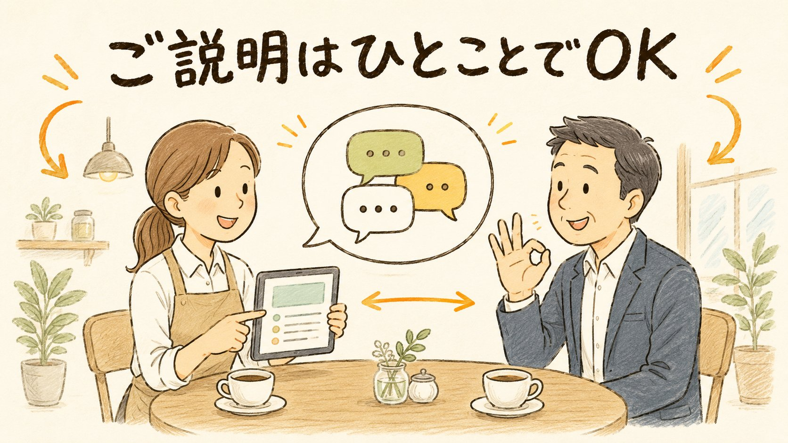
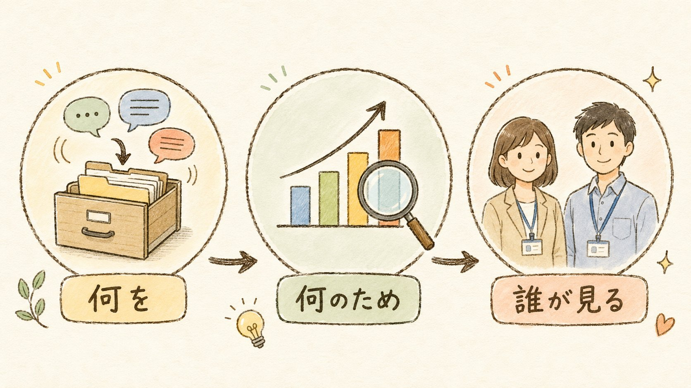

お客様とのチャットのやり取りを記録させていただく際の、ご説明のしかたガイドです。むずかしく考えなくて大丈夫、ご説明はひとことでOK。そのまま使える台本つきです。

キックオフ時、またはサポート開始のタイミングで。グループへの投稿でも、打ち合わせの場で口頭でもOKです。
「承知しました」「大丈夫です」の一言で十分です。特別な書面は不要です。
会社名と「同意OK」を一言。設定はシステム側で行うので、担当者の作業はここまでです。
基本はお知らせ型でOK。丁寧に確認したい相手には確認型を使ってください（どちらにするかは担当判断でOK）。
【お知らせ】サポート品質の向上と、成果のご報告（サポート実績のとりまとめ）のため、本日以降このグループでのやり取りを記録させていただきます。記録は弊社サポートチームのみが確認し、外部に共有することはありません。ご不明点やご懸念があれば、お気軽にお知らせください。
サポートの品質向上と、のちほど成果をご報告するために、チャットでのやり取りを記録させていただいてもよろしいでしょうか？ 弊社のサポートチームだけが確認するもので、外部に出ることはありません。
説明の軸は「何を・何のため・誰が見る」の3つです。

ウツセバ社内用（担当者向け）／作成 2026-07-12／本ガイドの内容（説明範囲・Q&A）が実態と変わる場合は管理者が更新します。関連：お客様向け AIコンシェルジュ使い方ガイド